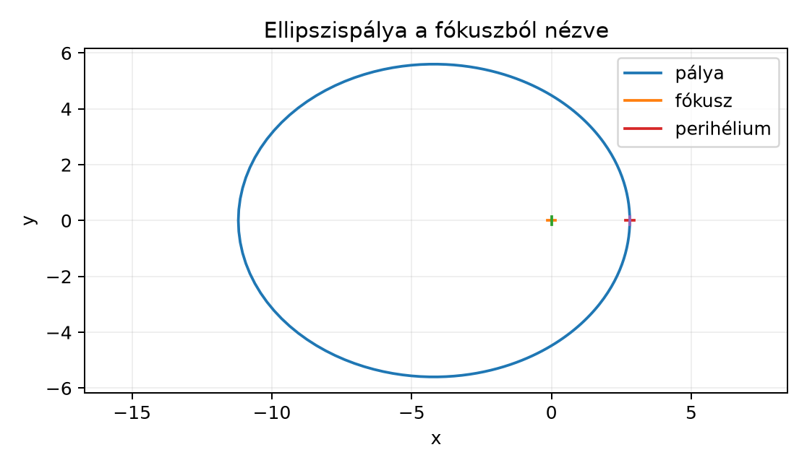

A bolygók mozgása a Nap körül évszázadok óta az égi mechanika
alapkérdése. Kepler törvényei empirikusan írták le a pályákat, Newton
pedig megmutatta, hogy a Nap által a bolygóra kifejtett gravitációs erő
centrális, és a Nap felé mutat: a Naptól a bolygóhoz húzott
helyvektorral ellentétes irányú,
.
A „centrális” önmagában csak azt jelenti, hogy az erő a sugáregyenes
mentén hat; lehet vonzó vagy taszító. A hagyományos vektoros
tárgyalásban a perdületvektor megmaradásából következik, hogy a mozgás
síkban marad, de a sík irányát és a területi sebességet a vektoriális
szorzat rejti el. A geometriai algebrában a perdület-bivektor
természetesen írja le a pálya síkját, és a Runge–Lenz-vektor levezetése
is átláthatóbbá válik. Ebben az alfejezetben a Kepler-probléma fő
lépéseit követjük végig a GA eszközeivel: megmutatjuk, hogy a pálya
síkban marad, levezetjük a kúpszelet-pálya egyenletét, és kimondjuk a
Kepler-törvényeket.
17.4.2 Szemléletes kép:
ellipszispálya a fókuszból nézve
Az alábbi ábra egy ellipszispályát mutat, a Nap az origóban (a
fókuszban) helyezkedik el. A pontok az
polárkoordinátás egyenletből származnak, ahol
a fél-paraméter,
az excentricitás. A pálya síkját a perdület-bivektor jelöli ki. A könyv
Runge–Lenz-vektora a perihéliummal ellentétes irányba mutat; a
perihélium iránya
,
ezért a
szöget
-tól
mérjük.

Ellipszispálya a fókuszból nézve - Sűrű
mintavétel az r = p/(1+e cos θ) képletből, p=4,48, e=0,6, 4 tizedesre
kerekítve. A fókusz az origóban, a perihélium a (2,8; 0) pontban; a kis
keresztek jelölik őket.
A pálya fél nagytengelye itt
,
a fél-paraméter
.
A legkisebb távolság (perihélium)
,
a legnagyobb (aphélium)
.
17.4.3 Definíciók és jelölések
Centrális erő. Akkor mondjuk, hogy egy anyagi pontra
ható erő centrális, ha az erő mindig egy rögzített
pont felé (vagy attól elfelé) mutat, és nagysága csak az
-tól
mért távolságtól függ:
A Newton-féle gravitációs erő esetén
,
ahol
a bolygó tömege,
a Nap gravitációs paramétere.
Perdület-bivektor. A korábbi Forgatónyomaték és impulzusmomentum bivektorként
alfejezetben bevezetett perdület-bivektor:
ahol
az impulzus. A hagyományos perdületvektorral
()
a kapcsolat:
,
ahol
a pszeudoszkalár.
Runge–Lenz-vektor GA-ban. A gravitációs centrális
erőhöz tartozó megmaradó vektort a következőképpen definiáljuk:
ahol
a tömeggel osztott perdület-bivektor. A könyv
-ja
a szokásos fajlagos excentricitásvektor negatívja;
ezért
a perihéliummal ellentétes irányba mutat, a perihélium iránya pedig
.
A további képletekben ezt a választást követjük.
17.4.4 A perdületmegmaradás és a
pálya síkja
Tétel. Centrális erő esetén a perdület-bivektor
állandó:
Bizonyítás. A perdület-bivektor deriváltja:
Mivel
és
,
az első tag
,
hiszen
.
A második tagban
,
tehát
mert
.
Így
,
tehát
megmarad.
Következmény (pálya síkja). Ha
állandó bivektor, akkor a mozgás során
és
mindig ugyanabban a síkban marad. Valóban,
és hasonlóan
,
tehát mindkét vektor benne fekszik abban a síkban, amelyet a
bivektor reprezentál. Ha
,
akkor a perdület eltűnik, és a mozgás sugárirányú; ekkor
minden
-re
teljesül, de ez nem jelöl ki síkot.
17.4.5 Sebesség felbontása radiális
és tangenciális részre
A Vetítés és visszautasítás alfejezetből
ismert módon a sebességvektort felbontjuk radiális
()
és tangenciális
()
komponensre:
Mivel
,
a perdület-bivektor:
hiszen
.
Így
,
ami éppen a területi sebesség kétszerese: a vezérsugár által súrolt
terület időbeli változása
.
17.4.6 A Runge–Lenz-vektor
megmaradása
Tétel. A gravitációs centrális erőtérben az
vektor állandó.
Bizonyítás. Deriváljuk
-t
az idő szerint:
Mivel
megmarad,
.
A mozgásegyenletből
,
és a korábbiak szerint
.
Így
Használjuk az azonosságot:
.
Ezért
Tehát
vagyis
valóban megmarad.
17.4.7 A pályaegyenlet
levezetése
A kúpszelet-levezetés előfeltételei:
(nem sugárirányú mozgás),
(a részecske nincs a gravitációs szingularitásban, az origóban) és
.
Ha
,
a mozgás sugárirányú, és a pálya nem kúpszelet a fenti értelemben.
A megmaradó
vektorból levezethető a kúpszelet-pálya egyenlete. Szorozzuk
-t
skalárisan
-rel:
A bal kontrakció
azonossága alapján (ez konkrét kontrakciós azonosság; a belső szorzat
általában nem asszociatív):
mert
.
Az azonosság mindkét oldalon bilineáris, ezért elég bázisvektorokra
ellenőrizni; ott a bal kontrakció a közös bázisvektorok törlését
jelenti, és mindkét oldal ugyanazt az előjeles pengét adja. Így
Átrendezve:
azaz
Legyen
és
.
Mivel
a perihéliummal ellentétes irányba mutat, a
szöget a
iránytól, azaz a perihéliumtól mérjük. Ekkor
,
így a nevező
lesz:
Ez a kúpszeletek polárkoordinátás
egyenlete:
esetén ellipszis,
esetén parabola,
esetén hiperbola.
17.4.8 Kidolgozott példa
Legyen
(egységrendszer),
és
.
Ekkor
A perihéliumban
():
Az aphéliumban
():
A fél nagytengely:
Ellenőrzés:
.
A fél kistengely:
A területi sebesség
.
Az ellipszis területe
.
Így a keringési idő:
17.4.9 Kepler-törvények
I. törvény: A bolygók pályája ellipszis, amelynek
egyik fókuszában a Nap áll. (Ez a fenti kúpszelet-egyenletből
esetén következik.)
II. törvény: A vezérsugár egyenlő időközökben
egyenlő területeket súrol. Mivel
állandó, ez azonnal adódik a perdületmegmaradásból.
III. törvény: A keringési idő négyzete arányos a
fél nagytengely köbével. Levezetve:
és
,
így
Tehát
.
Továbbvitt eredmény. A perdület-bivektor állandósága
a szabad merev testnél is érvényes külső nyomaték nélkül, de a
Kepler-féle
területi sebesség nem vihető át minden tömegpontra, és anizotrop testnél
és
sem feltétlenül párhuzamos. Ezt használjuk a Záróprojekt II: merev test forgásának szimulációja
rotorokkal alfejezetben, ahol a perdület-bivektorból határozzuk meg
a forgás tengelyét és a szögsebességet.
17.4.10 Tipikus hibák és
félreértések
Vektoriális szorzat és bivektor összekeverése: A
hagyományos perdületvektor a bivektor duálisa, és a kapcsolat
.
Az előjel a pszeudoszkalár konvenciójától függ; mindig ellenőrizzük,
hogy a duális milyen irányba mutat.
A Runge–Lenz-vektor előjelkonvenciója: A könyv
vektora a szokásos fajlagos excentricitásvektor negatívja, ezért a
perihélium iránya
,
és a
szöget
-tól
kell mérni. Más források
előjellel definiálhatják; a levezetésben mindig tüntessük fel, hogy
melyik irányt választottuk, és a
nevezőt ennek megfelelően használjuk.
A sebesség felbontása: A tangenciális komponens
számítható a
külső szorzatos képlettel, vagy egyszerűen a
kivonással, mert a Vetítés és visszautasítás
alfejezetben beláttuk, hogy
.
A két út ugyanazt adja; a külső szorzatos alak akkor hasznos, ha a
merőleges irányt közvetlenül a bivektorból akarjuk kiolvasni.
17.4.11 Feladatok
Fogalmi kérdés: Miért marad a pálya síkban
centrális erő esetén? Fogalmazza meg a perdület-bivektor
segítségével.
Kézi számolás: Legyen
és
a G(2) síkban. Számítsa ki a
bivektort, a
nagyságát, és a sebesség radiális/tangenciális felbontását
irányában.
Bizonyítási feladat: Vezesse le részletesen, hogy
az
vektor megmarad a gravitációs centrális erőtérben. Használja a
azonosságot.
Alkalmazás / Python: Adott
,
és
.
Számítsa ki a fél-paramétert, a perihélium- és aphéliumtávolságot, a fél
nagytengelyt, majd a keringési időt a Kepler III. törvénye alapján.
Hasonlítsa össze a területi sebességből kapott értékkel.
17.4.12 Megoldások
Centrális erőnél
,
tehát
állandó bivektor. Ha
,
akkor mivel
és
,
mindkét vektor mindig benne van az
által meghatározott síkban. Ha
,
a mozgás sugárirányú, és a fenti egyenlőségek nem jelölnek ki
síkot.
.
.
,
.
.
A szövegben bemutatott levezetés lépéseit követve:
,
,
és
,
ami kiejti a második tagot.
.
.
.
.
.
A területi sebesség
,
,
terület
,
így
,
ami ugyanaz.
17.4.13 Rövid összefoglaló
Centrális erőtérben a perdület-bivektor
állandó; ha
,
a mozgás az
által kijelölt síkban marad (az
eset sugárirányú mozgás). A sebesség radiális és tangenciális
komponensre bontásával megmutatható, hogy a területi sebesség
állandó. A gravitációs erőhöz tartozó
Runge–Lenz-vektor is megmarad; ez a szokásos excentricitásvektor
negatívja, ezért a perihélium iránya
.
A pályaegyenlet
,
ahol
és a
szöget
-tól
mérjük. Ebből következnek Kepler törvényei, köztük a harmadik:
.
A perdület-bivektor alkalmazását a merev test forgásának szimulációjában
a Záróprojekt II alfejezetben folytatjuk.